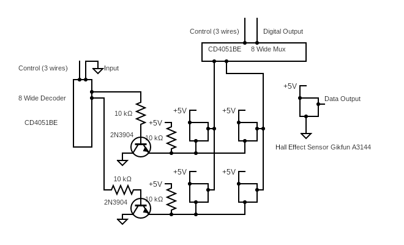
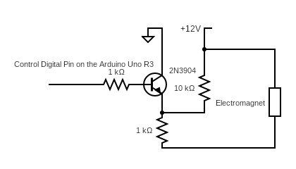
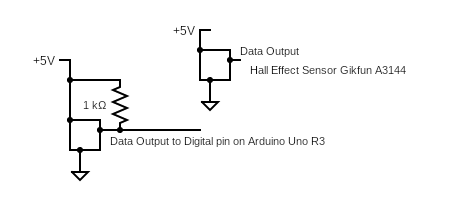
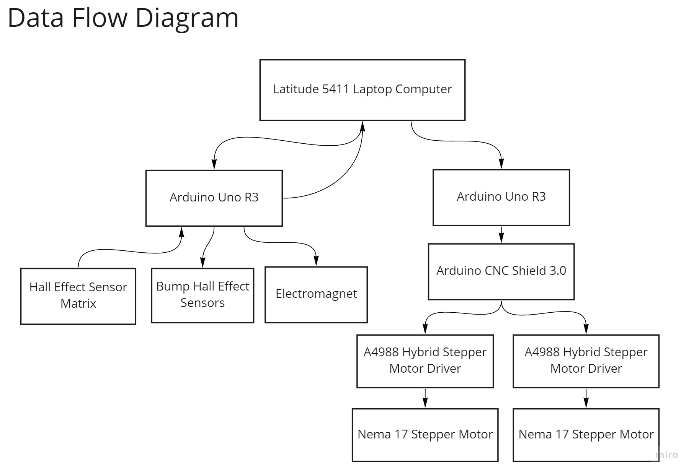
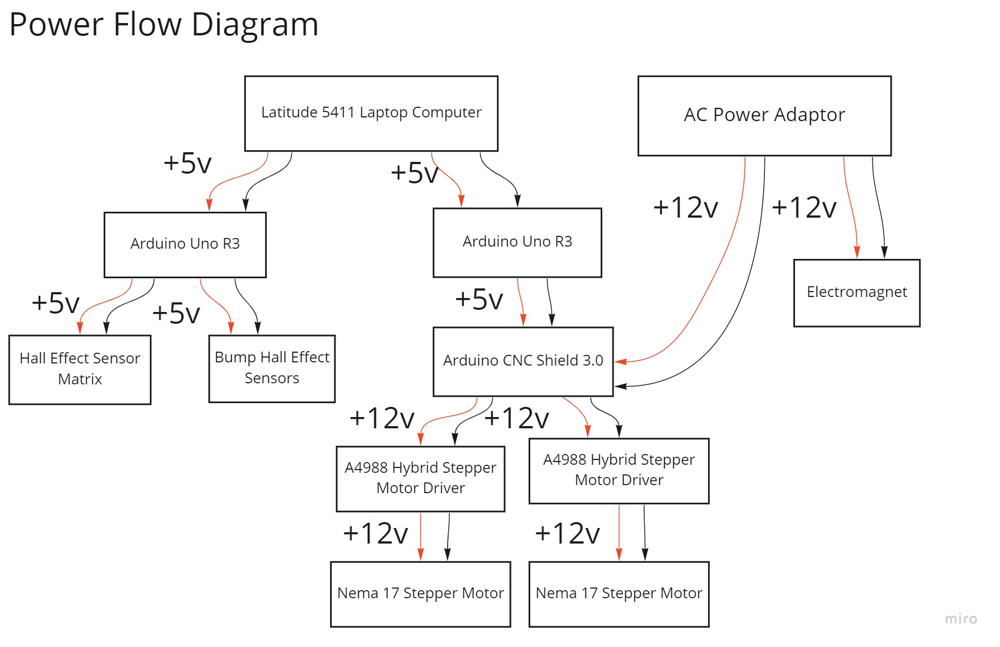

The code for controlling and tracking the flow of a game as well as directing the steppers and electromagnet is held in Python. The two Arduinos are responsible for implementing the commands sent from Python through Serial ports. One Arduino is responsible for motors and the other for the hall effect sensors.
The class that controls the game and keeps track of the player’s and AI’s moves is the Board class from the documented Python Chess Library. This library does the heavy lifting in terms of checking for invalid moves, wins, checkmates, etc. The Chess Drive Class translates chess moves (i.e. move x squares) to commands for the motors (move x steps) and calls the Motor Class to send those commands to the Serial Class which handles communication between our python programs and our Arduinos. The Digital Output Class controls the electromagnet, also using Serial to send information to the Arduino.
The sensor matrix switching is handled by the Arduino and transmitted to Python through the Serial Class. When Python then asks for an output from one of those sensors, the Arduino will automatically switch through all 64 states and print out the values as a Matrix, which Python reads and interprets.
We Implemented a MoveSensor class to handle translating the sensor inputs into moves. It stores the previous state of the hall effects and compares that to the current. When it does not see a magnet where there used to be one, we know a piece has been picked up. When it does see a magnet where there used to not be one, we know a piece has been set down. The MoveSensor class will keep track of the previous pick up. When a piece has been set down after that, it knows where the piece moved from and where it landed. To do captures, the MoveSensor keeps track of the last two piece pickups. If it detects two pickups before a put down, and the user puts down a piece on the most recent pick up square, it assumes a capture has been made. En passant and castling have not been handled, but could be with more time and a similar strategy to that as above.
The chess engine we used to be the AI chess player was the Stockfish 14.1 chess engine. Through the Pychess library and the UCI (Universal chess interface), the chess engine receives the moves of the player and responds accordingly. Then the engine’s move is translated to physical changes.
All links to external sources used can be found in Resources
The two goals for the mechanical subsystem was to find a way to move the pieces across the board, and build an external structure to house the components.

Full assembly: This is the full assembly of our hardware system. Its main components are two: the box and the gantry.
Gantry Design
The first goal was done using an electromagnet moved by a two-axis gantry system, in turn controlled by two NEMA 17 stepper motors. We designed and 3D printed all mounts for the steppers, rods, electromagnets and bearings, allowing us to achieve very precise fits and iterate quickly between versions of the parts. The stepper motors themselves were connected to m8 “fast threaded” rods by couplings.This is what will move the electromagnet mount when the stepper motors are active. Two unthreaded rods were added to provide stability to the system.

This is the full assembly of the two-axis gantry system.

This is used to hold the ball bearing that allows one of the two rods (y-axis) to spin without resistance. This was designed so that the center of the rod was 25mm from the ground, allowing the pieces to move freely.

This is used to hold the electromagnet that makes the piece move across the board. It is stabilised by two rods: one threaded, connected to the mount via a special nut that allows it to move, and one unthreaded, connected to the mount via a linear bearing.

This mount goes on the unthreaded side of the y-axis. It houses a stepper motor and an unthreaded rod, and moves along its axis through two linear bearings.

This mount goes on the opposite side of the y-axis of the stepper mount. It houses a ball bearing to make the x-axis threaded rod move freely and a nut to connect it to the y-axis threaded rod.

This is a simple mount to house the y-axis unthreaded rod. This was designed so that the center of the rod was 25mm from the ground, allowing the pieces to move freely.
On a final note,we decided to make the playing field 20x20”. This is the standard size used in American tournaments and would allow our pieces enough space to pass in between squares without disturbing other pieces that may reside in those squares.

Chess Matrix
The electromagnet was controlled using a 2N3904 NPN switching transistor and was powered through a separate power supply at 12v. Below is the schematics for the electromagnet being switched off and on by a transistor.

Electromagnet Schmatic
The two Nema 17 Stepper motors were connected to A4988 Hybrid Stepper Motor Drivers on a Arduino CNC shield V3.0 mounted on an Arduino Uno R3. The stepper motors were powered from a 12v power supply.To allow the gantry to reset itself and return to a known position, two Hall Effect sensors were installed along the two axes along with magnets mounted to different assemblies for Hall Effect sensors to detect. The outputs Hall effect Sensors were read by the Arduino Uno R3. Below is an image of the schematics for the Hall effect sensors used to detect magnets mounted to the gantry system.

Bump Sensor
_

Describes how data and commands flowed through the electrical system

Describes how the different voltages flowed through the system to power different components.